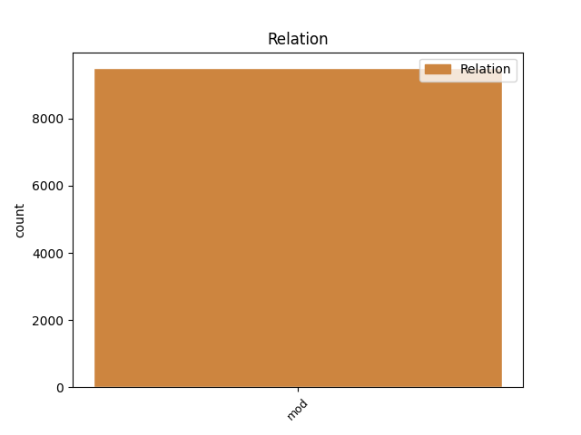
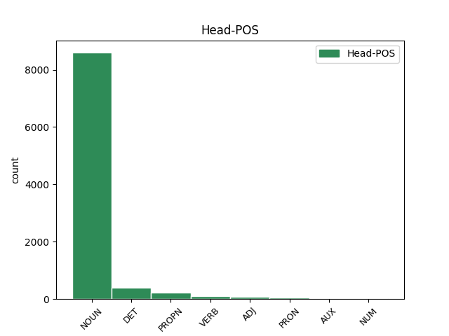
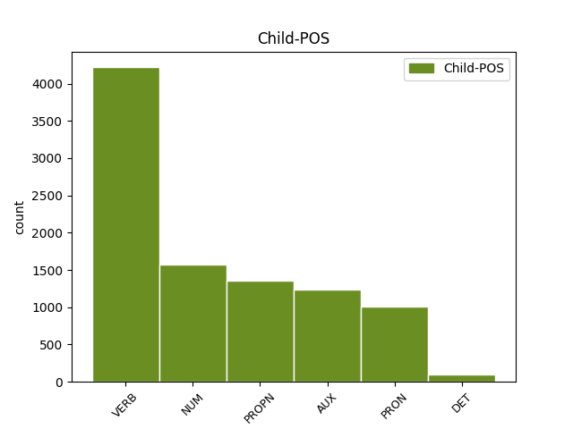

Distribution of features within this leaf



Agreement Rules sorted by frequency.
- When the dependent token is the modifer(mod) of the head token, and the dependent token is VERB.
1 Prvky _ _ _ _ 0 _ _ _
2 s _ _ _ _ 0 _ _ _
3 jedním _ _ _ _ 0 _ _ _
4 obvodovým _ _ _ _ 0 _ _ _
5 elektronem _ _ _ _ 0 _ _ _
6 tvoří _ _ _ _ 0 _ _ _
7 kladné _ _ _ _ 0 _ _ _
8 jednomocné _ _ _ _ 0 _ _ _
9 ionty iont NOUN NNIP4-----A---- Animacy=Inan|Case=Acc|Gender=Masc|Number=Plur|Polarity=Pos 0 _ _ _
10 , _ _ _ _ 0 _ _ _
11 které _ _ _ _ 0 _ _ _
12 vzniknou vzniknout VERB VB-P---3P-AA--- Aspect=Perf|Mood=Ind|Number=Plur|Person=3|Polarity=Pos|Tense=Pres|VerbForm=Fin|Voice=Act 9 mod _ _
13 odtržením _ _ _ _ 0 _ _ _
14 tohoto _ _ _ _ 0 _ _ _
15 elektronu _ _ _ _ 0 _ _ _
16 . _ _ _ _ 0 _ _ _
1 Naproti _ _ _ _ 0 _ _ _
2 tomu _ _ _ _ 0 _ _ _
3 prvky _ _ _ _ 0 _ _ _
4 , _ _ _ _ 0 _ _ _
5 kterým _ _ _ _ 0 _ _ _
6 chybí _ _ _ _ 0 _ _ _
7 jeden jeden NUM ClYS1---------- Case=Nom|Gender=Masc|Number=Sing|NumForm=Word|NumType=Card|NumValue=1,2,3 9 mod _ LNumValue=1
8 obvodový _ _ _ _ 0 _ _ _
9 elektron elektron NOUN NNIS1-----A---- Animacy=Inan|Case=Nom|Gender=Masc|Number=Sing|Polarity=Pos 0 _ _ _
10 do _ _ _ _ 0 _ _ _
11 úplného _ _ _ _ 0 _ _ _
12 obsazení _ _ _ _ 0 _ _ _
13 krajní _ _ _ _ 0 _ _ _
14 slupky _ _ _ _ 0 _ _ _
15 a _ _ _ _ 0 _ _ _
16 tvoří _ _ _ _ 0 _ _ _
17 jednomocné _ _ _ _ 0 _ _ _
18 záporné _ _ _ _ 0 _ _ _
19 ionty _ _ _ _ 0 _ _ _
20 a _ _ _ _ 0 _ _ _
21 vznikající _ _ _ _ 0 _ _ _
22 připoutáním _ _ _ _ 0 _ _ _
23 dalšího _ _ _ _ 0 _ _ _
24 elektronu _ _ _ _ 0 _ _ _
25 . _ _ _ _ 0 _ _ _
1 Kopalovy _ _ _ _ 0 _ _ _
2 výsledky _ _ _ _ 0 _ _ _
3 je _ _ _ _ 0 _ _ _
4 možné _ _ _ _ 0 _ _ _
5 aplikovat _ _ _ _ 0 _ _ _
6 na _ _ _ _ 0 _ _ _
7 těsné _ _ _ _ 0 _ _ _
8 dvojhvězdy _ _ _ _ 0 _ _ _
9 a _ _ _ _ 0 _ _ _
10 na _ _ _ _ 0 _ _ _
11 soustavu soustava NOUN NNFS4-----A---- Case=Acc|Gender=Fem|Number=Sing|Polarity=Pos 0 _ _ _
12 Země Země PROPN NNFS1-----A---- Case=Nom|Gender=Fem|NameType=Geo|Number=Sing|Polarity=Pos 11 mod _ SpaceAfter=No
13 , _ _ _ _ 0 _ _ _
14 Měsíc _ _ _ _ 0 _ _ _
15 . _ _ _ _ 0 _ _ _
1 Všechny všechno PRON PLFP1---------- Case=Nom|Gender=Fem|Number=Plur|PronType=Tot 2 mod _ _
2 periody perioda NOUN NNFP1-----A---- Case=Nom|Gender=Fem|Number=Plur|Polarity=Pos 0 _ _ _
3 končí _ _ _ _ 0 _ _ _
4 nultým _ _ _ _ 0 _ _ _
5 sloupcem _ _ _ _ 0 _ _ _
6 , _ _ _ _ 0 _ _ _
7 v _ _ _ _ 0 _ _ _
8 němž _ _ _ _ 0 _ _ _
9 jsou _ _ _ _ 0 _ _ _
10 prvky _ _ _ _ 0 _ _ _
11 s _ _ _ _ 0 _ _ _
12 nulovou _ _ _ _ 0 _ _ _
13 valencí _ _ _ _ 0 _ _ _
14 , _ _ _ _ 0 _ _ _
15 které _ _ _ _ 0 _ _ _
16 netvoří _ _ _ _ 0 _ _ _
17 sloučeniny _ _ _ _ 0 _ _ _
18 . _ _ _ _ 0 _ _ _
1 Jsou _ _ _ _ 0 _ _ _
2 to _ _ _ _ 0 _ _ _
3 vzácné _ _ _ _ 0 _ _ _
4 , _ _ _ _ 0 _ _ _
5 netečné _ _ _ _ 0 _ _ _
6 neboli _ _ _ _ 0 _ _ _
7 inertní _ _ _ _ 0 _ _ _
8 plyny plyn NOUN NNIP1-----A---- Animacy=Inan|Case=Nom|Gender=Masc|Number=Plur|Polarity=Pos 0 _ _ _
9 , _ _ _ _ 0 _ _ _
10 jejichž _ _ _ _ 0 _ _ _
11 molekuly _ _ _ _ 0 _ _ _
12 jsou být AUX VB-P---3P-AA--- Mood=Ind|Number=Plur|Person=3|Polarity=Pos|Tense=Pres|VerbForm=Fin|Voice=Act 8 mod _ _
13 jednoatomové _ _ _ _ 0 _ _ _
14 . _ _ _ _ 0 _ _ _
1 To _ _ _ _ 0 _ _ _
2 umožní _ _ _ _ 0 _ _ _
3 porovnat _ _ _ _ 0 _ _ _
4 různé _ _ _ _ 0 _ _ _
5 metody _ _ _ _ 0 _ _ _
6 a _ _ _ _ 0 _ _ _
7 na _ _ _ _ 0 _ _ _
8 základě základ NOUN NNIS6-----A---- Animacy=Inan|Case=Loc|Gender=Masc|Number=Sing|Polarity=Pos 0 _ _ _
9 toho ten DET PDZS2---------- Case=Gen|Gender=Masc,Neut|Number=Sing|PronType=Dem 8 mod _ _
10 navrhnout _ _ _ _ 0 _ _ _
11 a _ _ _ _ 0 _ _ _
12 vyzkoušet _ _ _ _ 0 _ _ _
13 účinné _ _ _ _ 0 _ _ _
14 způsoby _ _ _ _ 0 _ _ _
15 . _ _ _ _ 0 _ _ _
Disagree Examples:
1 Pro _ _ _ _ 0 _ _ _
2 účely _ _ _ _ 0 _ _ _
3 pravidel _ _ _ _ 0 _ _ _
4 silničního _ _ _ _ 0 _ _ _
5 provozu _ _ _ _ 0 _ _ _
6 však _ _ _ _ 0 _ _ _
7 zůstává _ _ _ _ 0 _ _ _
8 , _ _ _ _ 0 _ _ _
9 jak _ _ _ _ 0 _ _ _
10 vyplývá _ _ _ _ 0 _ _ _
11 z _ _ _ _ 0 _ _ _
12 dalších _ _ _ _ 0 _ _ _
13 ustanovení _ _ _ _ 0 _ _ _
14 , _ _ _ _ 0 _ _ _
15 rozhodujícím _ _ _ _ 0 _ _ _
16 pro _ _ _ _ 0 _ _ _
17 to ten DET PDNS4---------- Case=Acc|Gender=Neut|Number=Sing|PronType=Dem 0 _ _ _
18 , _ _ _ _ 0 _ _ _
19 které _ _ _ _ 0 _ _ _
20 silnice _ _ _ _ 0 _ _ _
21 jsou být AUX VB-P---3P-AA--- Mood=Ind|Number=Plur|Person=3|Polarity=Pos|Tense=Pres|VerbForm=Fin|Voice=Act 17 mod _ _
22 dálnicemi _ _ _ _ 0 _ _ _
23 , _ _ _ _ 0 _ _ _
24 silnicemi _ _ _ _ 0 _ _ _
25 pro _ _ _ _ 0 _ _ _
26 motorová _ _ _ _ 0 _ _ _
27 vozidla _ _ _ _ 0 _ _ _
28 a _ _ _ _ 0 _ _ _
29 silnicemi _ _ _ _ 0 _ _ _
30 # _ _ _ _ 0 _ _ _
31 nebo _ _ _ _ 0 _ _ _
32 # _ _ _ _ 0 _ _ _
33 třídy _ _ _ _ 0 _ _ _
34 , _ _ _ _ 0 _ _ _
35 jejich _ _ _ _ 0 _ _ _
36 označení _ _ _ _ 0 _ _ _
37 dopravními _ _ _ _ 0 _ _ _
38 značkami _ _ _ _ 0 _ _ _
39 . _ _ _ _ 0 _ _ _
1 Jízdní _ _ _ _ 0 _ _ _
2 soupravou _ _ _ _ 0 _ _ _
3 se _ _ _ _ 0 _ _ _
4 rozumí _ _ _ _ 0 _ _ _
5 souprava _ _ _ _ 0 _ _ _
6 složená _ _ _ _ 0 _ _ _
7 z _ _ _ _ 0 _ _ _
8 tažného _ _ _ _ 0 _ _ _
9 nebo _ _ _ _ 0 _ _ _
10 z _ _ _ _ 0 _ _ _
11 tažného _ _ _ _ 0 _ _ _
12 a _ _ _ _ 0 _ _ _
13 tlačeného _ _ _ _ 0 _ _ _
14 motorového _ _ _ _ 0 _ _ _
15 vozidla _ _ _ _ 0 _ _ _
16 a _ _ _ _ 0 _ _ _
17 jednoho jeden NUM ClZS2---------- Case=Gen|Gender=Masc,Neut|Number=Sing|NumForm=Word|NumType=Card|NumValue=1,2,3 21 mod _ LNumValue=1
18 nebo _ _ _ _ 0 _ _ _
19 dvou _ _ _ _ 0 _ _ _
20 přípojných _ _ _ _ 0 _ _ _
21 vozidel vozidlo NOUN NNNP2-----A---- Case=Gen|Gender=Neut|Number=Plur|Polarity=Pos 0 _ _ _
22 . _ _ _ _ 0 _ _ _
1 Tramvají _ _ _ _ 0 _ _ _
2 se _ _ _ _ 0 _ _ _
3 rozumí _ _ _ _ 0 _ _ _
4 samostatně _ _ _ _ 0 _ _ _
5 jedoucí _ _ _ _ 0 _ _ _
6 kolejový _ _ _ _ 0 _ _ _
7 motorový _ _ _ _ 0 _ _ _
8 vůz _ _ _ _ 0 _ _ _
9 nebo _ _ _ _ 0 _ _ _
10 souprava _ _ _ _ 0 _ _ _
11 složená _ _ _ _ 0 _ _ _
12 z _ _ _ _ 0 _ _ _
13 více _ _ _ _ 0 _ _ _
14 motorových _ _ _ _ 0 _ _ _
15 vozů _ _ _ _ 0 _ _ _
16 anebo _ _ _ _ 0 _ _ _
17 z _ _ _ _ 0 _ _ _
18 motorového _ _ _ _ 0 _ _ _
19 vozu _ _ _ _ 0 _ _ _
20 a _ _ _ _ 0 _ _ _
21 jednoho jeden NUM ClZS2---------- Case=Gen|Gender=Masc,Neut|Number=Sing|NumForm=Word|NumType=Card|NumValue=1,2,3 26 mod _ LNumValue=1
22 nebo _ _ _ _ 0 _ _ _
23 více _ _ _ _ 0 _ _ _
24 připojených _ _ _ _ 0 _ _ _
25 vlečných _ _ _ _ 0 _ _ _
26 vozů vůz NOUN NNIP2-----A---- Animacy=Inan|Case=Gen|Gender=Masc|Number=Plur|Polarity=Pos 0 _ _ _
27 . _ _ _ _ 0 _ _ _
1 Křižovatkou _ _ _ _ 0 _ _ _
2 se _ _ _ _ 0 _ _ _
3 rozumí _ _ _ _ 0 _ _ _
4 místo místo NOUN NNNS1-----A---- Case=Nom|Gender=Neut|Number=Sing|Polarity=Pos 0 _ _ _
5 , _ _ _ _ 0 _ _ _
6 v _ _ _ _ 0 _ _ _
7 němž _ _ _ _ 0 _ _ _
8 se _ _ _ _ 0 _ _ _
9 protínají protínat VERB VB-P---3P-AA--- Aspect=Imp|Mood=Ind|Number=Plur|Person=3|Polarity=Pos|Tense=Pres|VerbForm=Fin|Voice=Act 4 mod _ _
10 nebo _ _ _ _ 0 _ _ _
11 stýkají _ _ _ _ 0 _ _ _
12 trasy _ _ _ _ 0 _ _ _
13 dvou _ _ _ _ 0 _ _ _
14 nebo _ _ _ _ 0 _ _ _
15 více _ _ _ _ 0 _ _ _
16 silnic _ _ _ _ 0 _ _ _
17 . _ _ _ _ 0 _ _ _
1 Sníženou _ _ _ _ 0 _ _ _
2 viditelností _ _ _ _ 0 _ _ _
3 se _ _ _ _ 0 _ _ _
4 rozumí _ _ _ _ 0 _ _ _
5 období období NOUN NNNS1-----A---- Case=Nom|Gender=Neut|Number=Sing|Polarity=Pos 0 _ _ _
6 , _ _ _ _ 0 _ _ _
7 kdy _ _ _ _ 0 _ _ _
8 účastníci _ _ _ _ 0 _ _ _
9 silničního _ _ _ _ 0 _ _ _
10 provozu _ _ _ _ 0 _ _ _
11 dostatečně _ _ _ _ 0 _ _ _
12 zřetelně _ _ _ _ 0 _ _ _
13 nevidí vidět VERB VB-P---3P-NA--- Mood=Ind|Number=Plur|Person=3|Polarity=Neg|Tense=Pres|VerbForm=Fin|Voice=Act 5 mod _ _
14 sebe _ _ _ _ 0 _ _ _
15 navzájem _ _ _ _ 0 _ _ _
16 ani _ _ _ _ 0 _ _ _
17 předměty _ _ _ _ 0 _ _ _
18 na _ _ _ _ 0 _ _ _
19 silnici _ _ _ _ 0 _ _ _
20 , _ _ _ _ 0 _ _ _
21 od _ _ _ _ 0 _ _ _
22 soumraku _ _ _ _ 0 _ _ _
23 do _ _ _ _ 0 _ _ _
24 svítání _ _ _ _ 0 _ _ _
25 , _ _ _ _ 0 _ _ _
26 za _ _ _ _ 0 _ _ _
27 mlhy _ _ _ _ 0 _ _ _
28 , _ _ _ _ 0 _ _ _
29 sněžení _ _ _ _ 0 _ _ _
30 , _ _ _ _ 0 _ _ _
31 hustého _ _ _ _ 0 _ _ _
32 deště _ _ _ _ 0 _ _ _
33 . _ _ _ _ 0 _ _ _